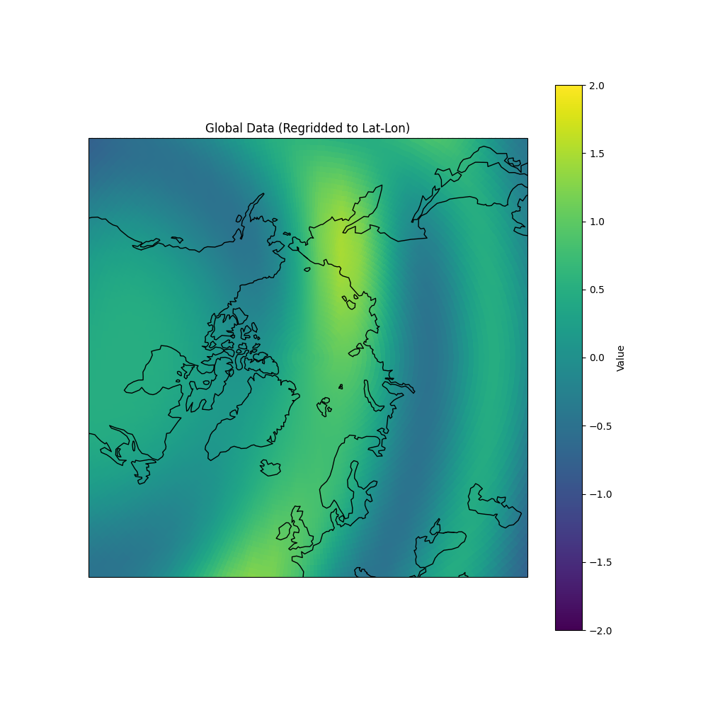
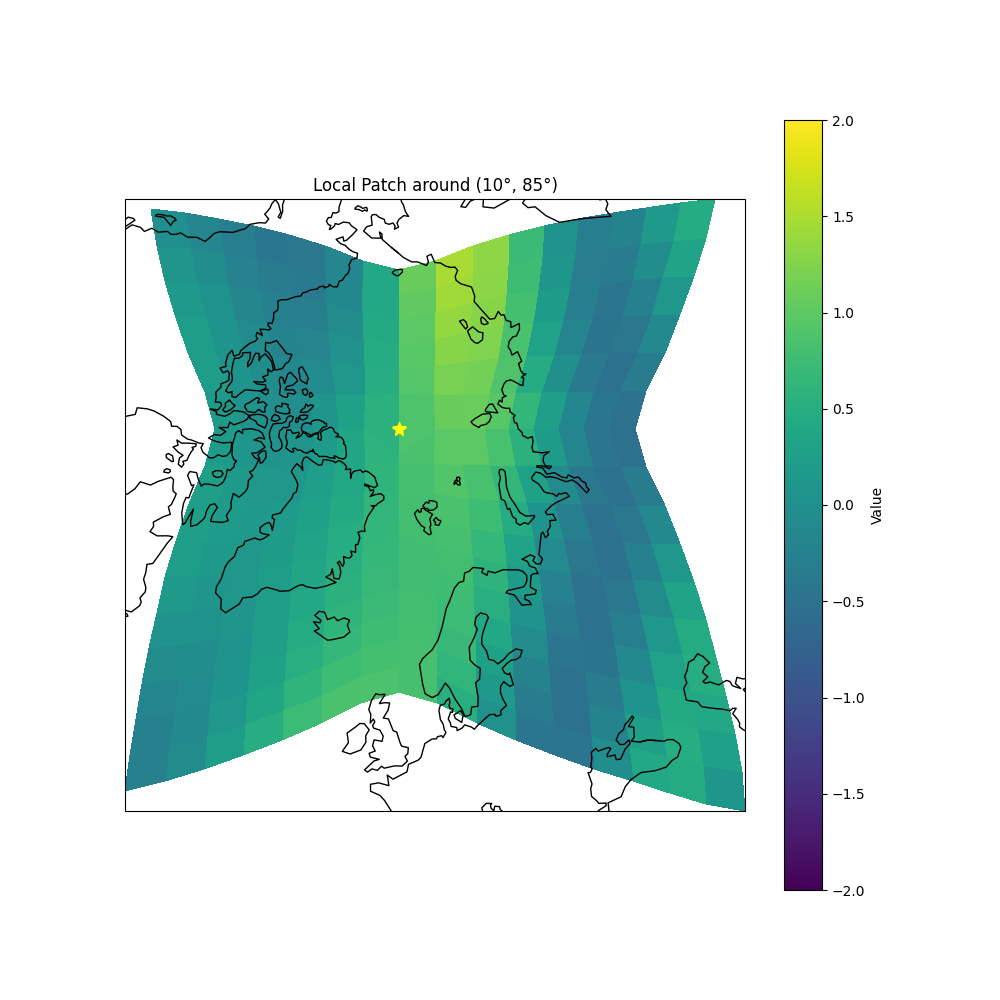

Note
Go to the end to download the full example code.
Working with HEALPix Grids and Local Patches#
This example demonstrates how to work with HEALPix grids and extract local patches around specific points on the sphere. We’ll show:
Creating a HEALPix grid
Generating example data on the sphere
Extracting a local patch around a point
Visualizing both global and local data
Note that the patch can cover multiple HEALPix faces.
The example uses a combination of HEALPix operations and Cartopy for visualization.
- 
- 
import matplotlib.pyplot as plt
import torch
import cartopy.crs
import numpy as np
from earth2grid.healpix import XY, Grid
from earth2grid import healpix
from earth2grid.healpix_bare import ang2pix
from earth2grid.spatial import ang2vec
from earth2grid.healpix import local2xy, ring2xy
from earth2grid import latlon
VMIN = -2
VMAX = 2
CMAP = 'viridis'
PROJECTION = cartopy.crs.NorthPolarStereo()
def create_healpix_grid(order):
"""Create a HEALPix grid of specified order."""
nside = 2**order
grid = Grid(order, pixel_order=XY())
return grid, torch.from_numpy(grid.lat), torch.from_numpy(grid.lon)
def generate_example_data(lon, lat):
"""Generate example data on the sphere using spherical harmonics."""
x, y, z = ang2vec(lon.deg2rad(), lat.deg2rad())
return torch.cos(x + 3 * y) ** 5 + 0.5 * torch.sin(10 * (z - y))
def extract_local_patch(nside, lon0, lat0, pad):
"""Extract a local patch of pixels around the specified point."""
# Convert target point to pixel index
i = ang2pix(nside, torch.tensor([lon0]), torch.tensor([lat0]), lonlat=True)
origin = ring2xy(nside, i)
x0 = origin % nside
y0 = (origin % nside**2) // nside
face0 = origin // (nside**2)
# Create offset grid
dx = torch.arange(-pad, pad)
dy = torch.arange(-pad, pad)
dy, dx = torch.meshgrid(dy, dx, indexing="ij")
# Get local coordinates
x, y, f = local2xy(nside, x0 + dx, y0 + dy, face0)
# Convert to pixel indices
pix = torch.where(f < 12, nside**2 * f + nside * y + x, -1)
return pix
def plot_global_data(grid, z, lon0, lat0):
"""Plot the global data in HEALPix RING ordering."""
# Create a regular lat-lon grid
import earth2grid
nlat, nlon = 180, 360 # 1-degree resolution
latlon_grid = latlon.equiangular_lat_lon_grid(nlat, nlon)
# Create regridder from HEALPix to lat-lon
regridder = earth2grid.get_regridder(grid, latlon_grid)
# Regrid the data
z_regridded = regridder(z)
fig = plt.figure(figsize=(10, 10))
ax = plt.subplot(projection=cartopy.crs.NorthPolarStereo())
# Set the extent to show from pole to 45 degrees latitude
ax.set_extent([-180, 180, 45, 90], crs=cartopy.crs.PlateCarree())
# Plot the regridded data
plt.pcolormesh(
latlon_grid.lon,
latlon_grid.lat,
z_regridded,
transform=cartopy.crs.PlateCarree(),
cmap=CMAP,
vmin=VMIN,
vmax=VMAX,
)
ax.coastlines()
plt.colorbar(label='Value')
plt.title('Global Data (Regridded to Lat-Lon)')
plt.show()
def plot_local_patch(lon, lat, z, pix, lon0, lat0):
"""Plot a local patch of data using Cartopy."""
fig = plt.figure(figsize=(10, 10))
ax = plt.subplot(projection=PROJECTION)
plt.pcolormesh(lon[pix], lat[pix], z[pix], transform=cartopy.crs.PlateCarree(), cmap=CMAP, vmin=VMIN, vmax=VMAX)
# Mark the center point
ax.plot(lon0, lat0, marker="*", markersize=10.0, color='yellow')
ax.coastlines()
plt.colorbar(label='Value')
plt.title(f'Local Patch around ({lon0}°, {lat0}°)')
plt.show()
def main():
"""Run the example demonstrating HEALPix grid operations."""
# Set up grid parameters
order = 4
nside = 2**order
pad = nside // 2 # Size of local patch
# Create grid and get coordinates
grid, lat, lon = create_healpix_grid(order)
# Generate example data
z = generate_example_data(lon, lat)
# Choose a point of interest
lon0, lat0 = 10, 85 # Example point in northern hemisphere
# Extract local patch
pix = extract_local_patch(nside, lon0, lat0, pad)
# Visualize results
plot_global_data(grid, z, lon0, lat0)
plot_local_patch(lon, lat, z, pix, lon0, lat0)
if __name__ == "__main__":
main()
Total running time of the script: (0 minutes 0.982 seconds)